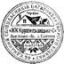

<mat-toolbar color="primary" *ngIf="currentPath !== '/login'">
  <div class="title-wrapper">
    

    <span>ОСББ</span>
  </div>

  <nav mat-tab-nav-bar color="primary">
    <a mat-tab-link routerLink="main" routerLinkActive="selected">Головна</a>
    <a mat-tab-link routerLink="news" routerLinkActive="selected">Новини</a>
    <a mat-tab-link routerLink="advertisement" routerLinkActive="selected">Оголошення</a>
    <a mat-tab-link routerLink="discussion" routerLinkActive="selected">Обговорення</a>
    <a mat-tab-link routerLink="documents" routerLinkActive="selected">Документи</a>
  </nav>

  <button *ngIf="!user" mat-raised-button class="login-button" (click)="goToLogin()">Вхід</button>

  <button *ngIf="!!user" mat-raised-button [matMenuTriggerFor]="menu">
    {{user.name}} {{user.lastName}}
  </button>

  <mat-menu #menu="matMenu">
    <button mat-menu-item *ngIf="!user?.isAdmin">
      <mat-icon>person</mat-icon>
      Моя інформація
    </button>

    <button mat-menu-item *ngIf="user?.isAdmin" (click)="goToUsers()">
      <mat-icon>supervisor_account</mat-icon>
      Користувачі
    </button>

    <button mat-menu-item (click)="logout()">
      <mat-icon>exit_to_app</mat-icon>
      Вийти з системи
    </button>
  </mat-menu>
</mat-toolbar>

<router-outlet></router-outlet>
